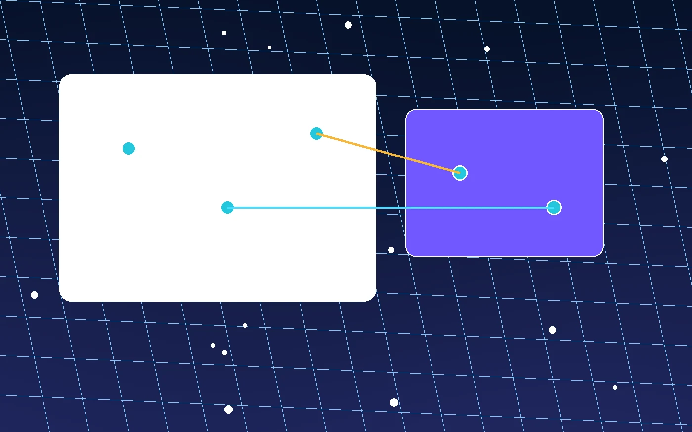

反馈时写清楚这些信息
设备型号、系统版本、当前网络、节点名称、出现异常的时间和页面截图，都能让排查更准确。
若邮件客户端未启动，请复制页面中的问题描述后，通过你常用的邮箱发送到 feedback@zqcg.cn。
专题页面
这是静态反馈页面，表单不会把内容保存到服务器。提交按钮会尝试打开本机邮件客户端，加速器连接问题也可以手动记录后发送。

设备型号、系统版本、当前网络、节点名称、出现异常的时间和页面截图，都能让排查更准确。
若邮件客户端未启动，请复制页面中的问题描述后，通过你常用的邮箱发送到 feedback@zqcg.cn。